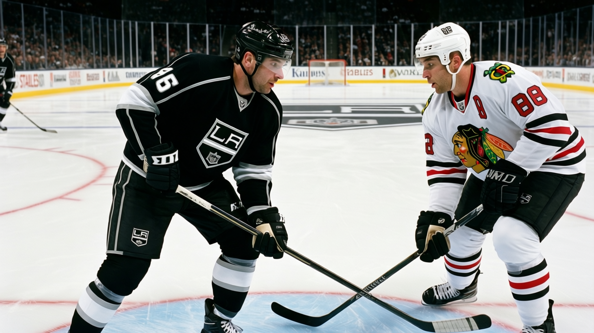
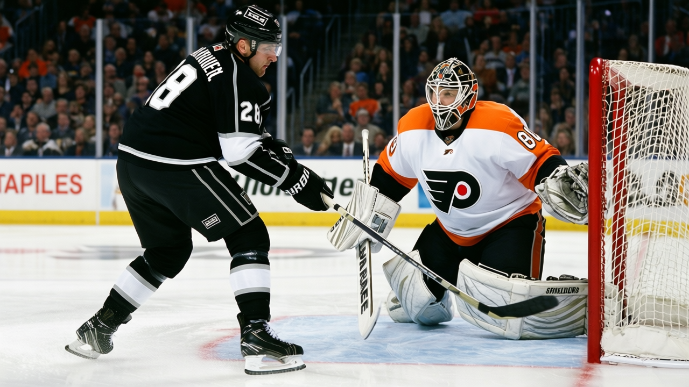

The 49th Pick From 2001 Now Outrates 11 of That Draft's First Rounders
Mike Cammalleri sits at +6 on the Development Index, 19 points in 17 games, and a potential figure of 97. Four years after the draft, his 83 overall is ahead of most of the first round that was supposed to be better than him.
 Pete LarocqueScouting editor · The Prospect File
Pete LarocqueScouting editor · The Prospect File
 Mike Cammalleri79 [52] has 19 points in 17 games for
Mike Cammalleri79 [52] has 19 points in 17 games for  Los Angeles Kings this season. He carries a +6 on the Development Index, tied with
Los Angeles Kings this season. He carries a +6 on the Development Index, tied with  Marian Gaborik97 and Mike Komisarek74 for the highest form term among under-23s. His overall reads 83. His potential figure sits at 97, which puts him in a group of eight players in the league under 25 with that number.
Marian Gaborik97 and Mike Komisarek74 for the highest form term among under-23s. His overall reads 83. His potential figure sits at 97, which puts him in a group of eight players in the league under 25 with that number.
He was the 49th pick of the 2001 draft.
The comparison nobody is making
Of the 14 first-rounders from 2001 still on league rosters today, Cammalleri's 83 overall is ahead of 11 of them.  Jason Spezza71 sits at 70.
Jason Spezza71 sits at 70.  Alexander Svitov67 is at 73.
Alexander Svitov67 is at 73.  Stephen Weiss70 is at 71.
Stephen Weiss70 is at 71.  Stanislav Chistov81 reads 80.
Stanislav Chistov81 reads 80.  Ales Hemsky70 is at 76.
Ales Hemsky70 is at 76.  Chuck Kobasew64 and Carlo Colaiacovo72 and Shaone Morrisonn64 and Lukas Krajicek71 are all below him.
Chuck Kobasew64 and Carlo Colaiacovo72 and Shaone Morrisonn64 and Lukas Krajicek71 are all below him.
Only three 2001 first-rounders carry a higher overall:  Ilya Kovalchuk92 at 91,
Ilya Kovalchuk92 at 91,  Pascal Leclaire84 at 84, and Jason Bacashihua81 at 85. Cammalleri is ahead of
Pascal Leclaire84 at 84, and Jason Bacashihua81 at 85. Cammalleri is ahead of  Dan Blackburn75 (81) and
Dan Blackburn75 (81) and  Vaclav Nedorost77 (78), both first-round picks, both on the same risers list he is on.
Vaclav Nedorost77 (78), both first-round picks, both on the same risers list he is on.
That table is the argument. The 49th selection from 2001 is a better player right now than the 2nd, 3rd, 4th, 5th, 7th, 10th, 13th, 14th, 17th, 19th, and 24th picks from that draft.
The elbow and the return
Cammalleri missed time with an elbow that was designated by the league as a shoulder-and-arm issue with onset recorded sometime before December 1. The return date was December 14. He has played in every game since. The 17 games on his stat line include everything from the start of the season through a short pre-injury stretch and then the 9 games since the return.
Los Angeles Kings have won four straight, including a 4-3 home win over Philadelphia on January 2 and a 5-3 win over Chicago on December 30. The club sits at 39 points in 38 games, 12-16-5, 9-8 at home and 8-13 on the road. They are not a good team. Cammalleri's production inside that context is what the Index is reading.
The potential and the price
A potential figure of 97 on the Bureau's Book means the evaluators see real upside left. Cammalleri's base overall is 79. The current reading of 83 is 4 above that base, and the Index term of +6 tells you the Bureau's model sees the current form as well above the baseline grade. The spread between 79 base and 97 potential is 18 points of room. Only  Rick Nash82 (77 base, 95 potential, 18 points of room) and Steve Eminger76 (75 base, 99 potential, 24 points of room) among under-23 players carry a gap of 18 or more while already at 83 or above in current reading.
Rick Nash82 (77 base, 95 potential, 18 points of room) and Steve Eminger76 (75 base, 99 potential, 24 points of room) among under-23 players carry a gap of 18 or more while already at 83 or above in current reading.
 Rostislav Klesla83 carries a 97 potential and sits at 82. Rick Nash has 95 and sits at 81. Cammalleri at 83 with a 97 potential is the most finished player in that group, still 14 points below his ceiling.
Rostislav Klesla83 carries a 97 potential and sits at 82. Rick Nash has 95 and sits at 81. Cammalleri at 83 with a 97 potential is the most finished player in that group, still 14 points below his ceiling.
What the 49th pick means
The 2001 draft had Kovalchuk at first overall, Spezza at second, Svitov at third, Weiss at fourth, Chistov at fifth. The man who ended up with 19 points in 17 games and a +6 on the Index was taken 44 picks after Chistov. The scouting consensus at the time put him below 14 other players in that draft class.
The Bureau's Book does not care where a man was drafted. It grades the player on the roster today. Today it says 83 overall, +6 form, 97 potential. Four years ago it said he was worth the 49th selection. Both grades are correct. The second one is what the room in Los Angeles has to build around.

Cammalleri's 20.2 minutes a night put him on the top two lines. He is 22 years old. He will be 23 in August. His contract runs through the end of this season.